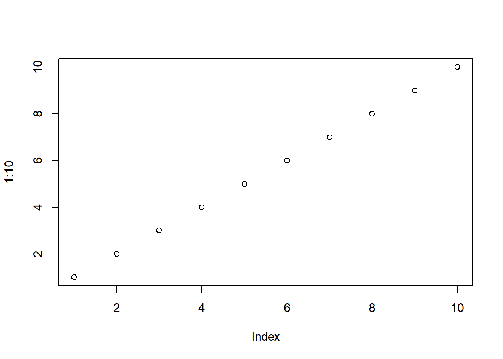

Código
x <- c(1, 2, 3, 4, 5)
# Características: Todos os elementos devem ser do mesmo tipo. São indexados a partir de 1. Permitem operações vetorizadas.
# Ou de forma automática:
x <- 1:10

Estatística e Probabilidade
Prof. Ben Dêivide (DEFIM/CAP/UFSJ)
A linguagem R é um ambiente de programação amplamente utilizado para computação estatística, análise de dados e construção de gráficos. Sua popularidade no meio acadêmico e científico deve-se à sua grande capacidade de manipulação de dados e à vasta quantidade de pacotes disponíveis.
Este relatório tem como objetivo apresentar os conceitos fundamentais da linguagem R, com foco em sua estrutura básica, principais operações e lógica de funcionamento. A abordagem adotada busca não apenas descrever os conceitos, mas também servir como um guia introdutório para iniciantes na linguagem.
Apresentar os principais conceitos básicos da linguagem R, de forma didática, visando facilitar o processo de aprendizagem.
Compreender a estrutura fundamental da linguagem R. Aprender a manipular objetos e funções. Entender conceitos como escopo léxico e atribuição. Explorar operações básicas e estruturas de dados.
A linguagem R pode ser compreendida a partir de três princípios fundamentais que orientam sua lógica de funcionamento.
O princípio do objeto estabelece que tudo no R é um objeto, incluindo números, vetores, funções e modelos estatísticos. Cada objeto possui propriedades específicas, como tipo e dimensão, que determinam seu comportamento.
O princípio da função indica que todas as operações na linguagem são realizadas por meio de funções, responsáveis por receber dados de entrada, processá-los e retornar resultados.
Por fim, o princípio da interface evidencia a capacidade do R de integrar-se com outras linguagens, como C e Fortran, permitindo maior eficiência computacional em operações mais complexas.
Dessa forma, esses três princípios estruturam a base conceitual necessária para compreender o funcionamento da linguagem.
Os dados em R podem assumir diferentes tipos, sendo os principais:
Numérico: representa números reais.
Inteiro: representa números inteiros.
Lógico: assume valores TRUE ou FALSE.
Caractere: utilizado para textos.
Esses tipos de dados são fundamentais para a construção das estruturas utilizadas ao longo das análises.
A partir desses tipos de dados, o R organiza as informações em estruturas, sendo o vetor a mais básica entre elas. Eles armazenam elementos do mesmo tipo (numérico, lógico ou caractere). Os vetores armazenam elementos de um mesmo tipo, sendo amplamente utilizados como base para outras estruturas mais complexas.
Exemplo:
x <- c(1, 2, 3, 4, 5)
# Características: Todos os elementos devem ser do mesmo tipo. São indexados a partir de 1. Permitem operações vetorizadas.
# Ou de forma automática:
x <- 1:10Após a criação de vetores, torna-se necessário acessar seus elementos, o que é feito por meio da indexação. A indexação em R é o mecanismo utilizado para acessar elementos específicos dentro de uma estrutura de dados, como vetores, matrizes, listas ou data frames.
Uma característica fundamental da linguagem R é que a indexação é baseada em 1, ou seja, a contagem dos elementos inicia-se no valor 1. Isso significa que o primeiro elemento de um vetor ou estrutura será acessado pela posição 1, diferentemente de outras linguagens de programação, como Python e C, nas quais a indexação começa em 0.
Exemplo:
x <- c(10, 20, 30, 40, 50)
# Nesse caso, foi criado um vetor x contendo cinco elementos numéricos.
# Para acessar o primeiro elemento do vetor, utiliza-se:
x[1][1] 10# Esse comando retorna o valor 10, que corresponde ao primeiro elemento do vetor.
# Além disso, o R permite acessar múltiplos elementos simultaneamente, utilizando um vetor de índices:
# Nesse caso, são retornados os elementos das posições 1, 3 e 5 do vetor.
x[c(1, 3, 5)] [1] 10 30 50Dessa forma, a indexação em R possibilita a seleção precisa de elementos dentro de uma estrutura de dados, sendo um recurso essencial para manipulação e análise de informações.
Enquanto os vetores armazenam dados homogêneos, as listas permitem maior flexibilidade, armazenando elementos de diferentes tipos.
Características: Estrutura heterogênea. Pode conter vetores, números, textos e até outras listas. Muito utilizada para armazenar resultados complexos
Exemplo:
No código abaixo, a função list() é utilizada para criar uma lista chamada lista, contendo três elementos distintos.
O primeiro elemento, denominado nome, armazena um valor do tipo caractere (“Lucas”). O segundo elemento, idade, contém um valor numérico (25). Já o terceiro elemento, notas, armazena um vetor numérico criado pela função c(), contendo três valores.
# Criando uma lista
lista <- list(
nome = "Lucas",
idade = 25,
notas = c(8, 9, 10)
)
# Cada elemento da lista pode ser acessado individualmente por meio do operador $, conforme ilustrado a seguir:
# Acessando elementos
lista $ nome[1] "Lucas"lista $ notas[1] 8 9 10Nesse caso, “lista $ nome” retorna o valor associado ao elemento “nome”, enquanto ” lista $ notas” retorna o vetor de notas armazenado.
Além disso, também é possível acessar elementos da lista por posição utilizando colchetes duplos:
lista[[1]]
Esse comando retorna o primeiro elemento da lista, que corresponde ao valor “Lucas”.
Dessa forma, as listas permitem a organização de dados complexos em uma única estrutura, sendo amplamente utilizadas em situações que envolvem diferentes tipos de informação.
Para organização de dados em formato tabular, utiliza-se o data frame, uma das estruturas mais importantes da linguagem.
Características: Estrutura bidimensional.Cada coluna pode ter um tipo diferente. Muito utilizado em estatística e ciência de dados.
Exemplo:
# Criando um data frame
dados <- data.frame(
nome = c("Ana", "Lucas", "João"),
idade = c(20, 25, 22),
nota = c(8.5, 9.0, 7.5)
)
dados$nota[1] 8.5 9.0 7.5dados[1, 2][1] 20Nesse código, a função data.frame() é utilizada para criar um objeto chamado dados, que armazena informações organizadas em colunas.
Cada argumento dentro da função representa uma coluna da tabela:
A coluna nome é composta por valores do tipo caractere, representando os nomes dos indivíduos. A coluna idade contém valores numéricos inteiros.A coluna nota armazena valores numéricos decimais.
Os valores de cada coluna são definidos por meio da função c(), que cria vetores. Todos os vetores devem possuir o mesmo comprimento, garantindo que cada linha da tabela represente uma observação completa.
A manipulação dessas estruturas é realizada por meio de funções. As funções são o principal mecanismo de execução de tarefas na linguagem R. Toda operação realizada — desde cálculos simples até análises complexas — ocorre por meio da chamada de funções.
Características:
Recebem argumentos (entradas).
Retornam um resultado (saída).
Podem ter argumentos opcionais.
Exemplos:
mean(c(1, 2, 3, 4, 5)) [1] 3# c(1, 2, 3, 4, 5); Cria um vetor.
# mean; Calcula a média desse vetor.
sum(1:10)[1] 551:10 # Cria os números de 1 até 10 [1] 1 2 3 4 5 6 7 8 9 10sum() # Soma esses valores[1] 0#nome_da_funcao(argumento1, argumento2)Após a manipulação dos dados, uma etapa essencial é sua visualização gráfica.
Exemplo:
plot(1:10)
Nesse comando, a função plot() é utilizada para criar um gráfico a partir de um conjunto de dados. O vetor 1:10 representa os valores no eixo horizontal, enquanto o eixo vertical assume automaticamente os mesmos valores, resultando em uma representação gráfica simples.
Além disso, a função plot() pode ser utilizada com diferentes tipos de dados e permite diversas personalizações, como títulos, rótulos de eixos e cores, tornando-se uma ferramenta versátil para análise exploratória.
Dessa forma, a visualização de dados no R constitui um recurso essencial para a compreensão dos resultados, auxiliando tanto na análise quanto na comunicação das informações obtidas.
O escopo léxico pode ser definido como uma regra de “herança” de visão. Em programação, ele define onde uma variável pode ser acessada com base em onde ela foi escrita no código.
O termo “léxico” refere-se ao texto, à estrutura física do script. Ou seja, o R olha para o lugar onde foi digitada a função para decidir quais variáveis ela consegue “enxergar”.
Em outras palavras, uma função sempre pode ver o que está ao redor dela (no nível em que foi criada), mas quem está do lado de fora não pode ver o que está dentro da função.
Como funciona na prática?
Imagine três “caixas” (escopos):
-1 Escopo Global: Onde todo o seu script roda.
-2 Escopo da Função A: Uma caixa dentro do Global.
-3 Escopo da Função B: Uma caixa dentro da Função A.
A Função B consegue ver as variáveis dela, as da Função A e as do Global.
O Global só consegue ver o que foi definido nele mesmo. Ele não tem “permissão” para espiar dentro das funções.
Exemplo:
# Variável no escopo global
nome <- "Lucas"
# Definição da função
saudacao <- function() {
sobrenome <- "Andrade" # Variável no escopo local (dentro da função)
# A função acessa a variável global 'nome'
print(paste("Olá,", nome, sobrenome))
}
# Chamando a função
saudacao()[1] "Olá, Lucas Andrade"No exemplo apresentado, observa-se o funcionamento do escopo léxico na linguagem R. A variável nome é definida no escopo global, podendo ser acessada dentro da função. Por outro lado, a variável sobrenome é criada dentro da função, estando disponível apenas no escopo local. Dessa forma, ao tentar acessar sobrenome fora da função, ocorre um erro, evidenciando que objetos definidos em escopos internos não são visíveis externamente.
A linguagem R demonstra ser um ambiente robusto para a computação estatística, destacando-se pela sintaxe voltada à manipulação eficiente de vetores e estruturas tabulares. O domínio de seus conceitos fundamentais — como a atribuição via <-, o entendimento do escopo léxico e a lógica de indexação — constitui a base necessária para a implementação de análises complexas e o desenvolvimento de modelos com rigor matemático.
Além disso, observa-se que a compreensão prática desses conceitos permite ao usuário não apenas executar comandos, mas também interpretar corretamente os resultados obtidos, tornando o processo de análise mais confiável e consistente.
Os objetivos propostos neste relatório foram alcançados, uma vez que foi possível compreender os principais fundamentos da linguagem R e sua aplicação na organização e manipulação de dados.
Por fim, destaca-se que o aprendizado da linguagem R representa uma etapa inicial dentro de um campo mais amplo, possibilitando avanços futuros no uso de bibliotecas especializadas, como ferramentas de visualização gráfica e manipulação de dados, bem como na aplicação de técnicas mais avançadas de análise estatística e ciência de dados.
Vídeo aulas disponibilizadas pelo professor da disciplina de Estatística e Probabilidade, Ben Dêivide, em seu Canal de Estatística e Probabilidade